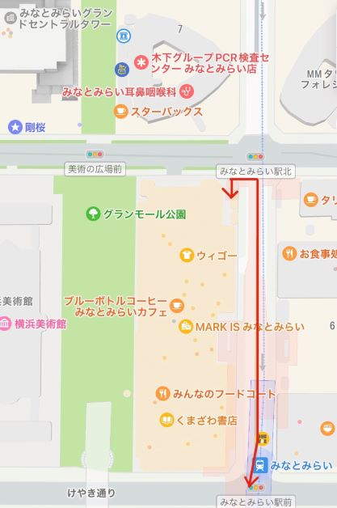
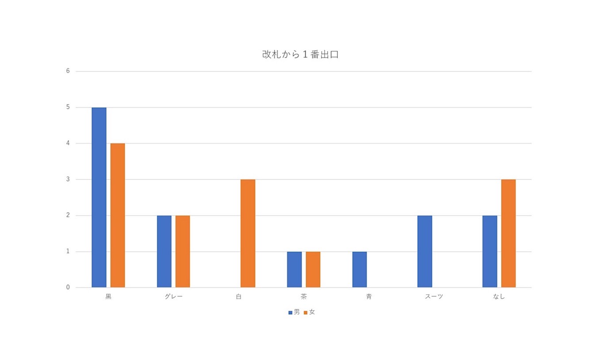
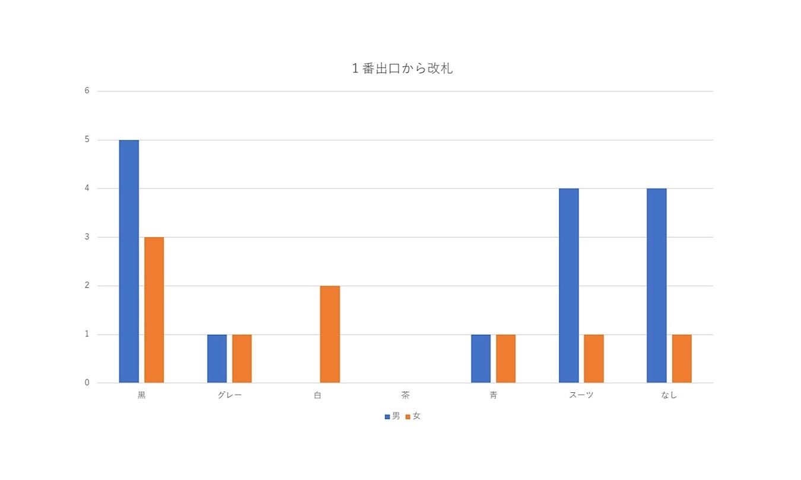
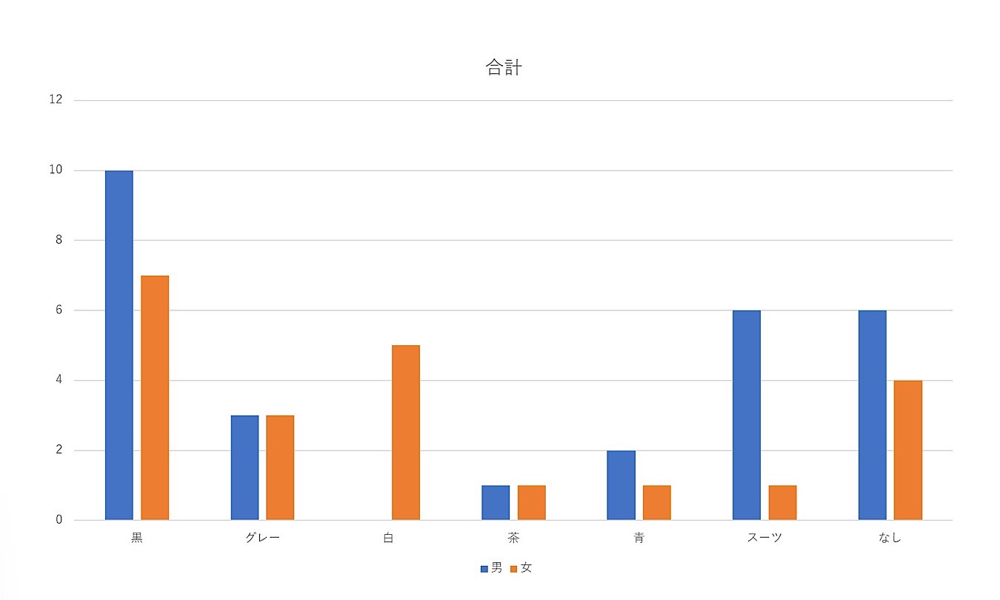

ホーム
デザイン演習Ⅰ・Ⅱ
デザイン演習 第３回
観察内容：アウターの色と性別の関係
観察経路：以下の画像の経路（みなとみらい駅改札～１番出口）を１往復した。

観察日時：10月18日(火) 14時～14時10分
観察方法：メンバー１名がスマートフォンで動画撮影。後日集計。
男女別で集計したアウターの色について
今回の観察では、行き（改札～１番出口）で男性13名・女性13名、帰り(１番出口～改札)で男性15名、女性9名、
合計で男性28名、女性22名を調査した。
アウターの色の分類は、「黒」「グレー」「白」「茶」「青」、そして、「スーツ」と「アウターを着ていない人」の7つとした。
調査結果をグラフにすると、以下のようになった。


男女ともに、黒色を着ている人が多くいることがわかる。
また、当日の横浜の最高気温が18.5℃だったものの、アウターを着ていない男性が6人、女性が4人いた。
これは、みなとみらい駅が地下にあり、少し暖かかったことが要因であると考えた。
上記のような、男女の共通点が挙げられる一方、男女で異なるデータも2点見受けられる。
１つ目は、白色のアウターを着ている女性が５人もいた一方、男性は１人も着ていないことである。
確かに、男性である筆者も、白色のアウターは持っていない。男女で白色に対する感じ方の違いがあるのかもしれないと考えた。
２つ目は、スーツを着ている男性が６人もいた一方、女性は１人しか着ていなかったことである。
移動観察は14時頃に行い、スーツを着ていた男性は外回りの営業や他オフィスに移動しているのではないかと推測した。
スーツを着ていた女性は１人しか見られず、男女の働き方の違いがこの結果に出ているのではないかと考える。
まとめ
今回、移動観察を行い、男女のアウターの色や着方の共通点を見つけることができた。
また、男女で異なる点も見つけ、特に白色のアウターの統計結果について興味が沸いた。
なぜこのアウターを選んだのか、直接聞き込み調査を行って見たいと感じた。